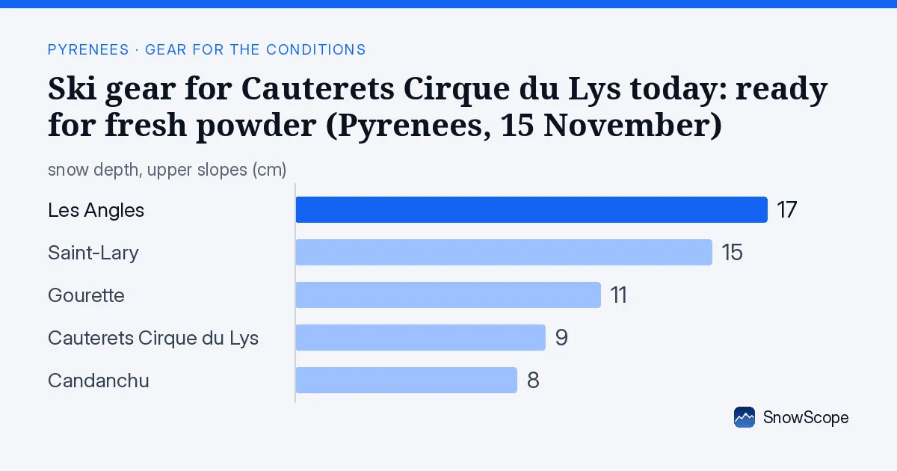

Pyrenees warming: pack waterproof gear as freezing level reaches 4080 m
Bring waterproof gear: today the freezing level in the Pyrenees is forecast to climb to 4080 m, bringing rain to all elevations and threatening the thin snow we measured on 15 November. Snow depths remain under 20 cm at the top of all five resorts, so the snowpack is fragile and will rapidly degrade as liquid water percolates down and refreezes into crust.
See the live snow forecast for Les Angles in the SnowScope appSnow depth, powder alerts and the 3D map, free.
Why freezing level matters for the snowpack
As a snow hydrologist, I watch the freezing level—the boundary where air temperature switches from below zero to above zero—because it determines whether precipitation falls as snow or rain. Today's forecast puts the freezing level at 4080 m at its maximum, well above all the ski area tops. Any water falling above this height will come as rain. This rain soaks into the thin snowpack and weighs it down, speeding the melt. When rain refreezes during the night, it hardens into crust, changing how the snow skis.
The snow we measured on 15 November—17 cm at Les Angles, 15 cm at Saint-Lary, 11 cm at Gourette, 9 cm at Cauterets Cirque du Lys, and 8 cm at Candanchu—is too thin to absorb much liquid without rapid degradation. Snow that skis light now may be heavy or icy by this afternoon.
| Resort | Snow depth | New snow, 72 h | Coming, next days | Top |
|---|---|---|---|---|
| Les Angles | 17 cm | 2 cm | 0 cm | 2,358 m |
| Saint-Lary | 15 cm | 10 cm | 0 cm | 2,462 m |
| Gourette | 11 cm | 18 cm | 2 cm | 2,453 m |
| Cauterets Cirque du Lys | 9 cm | 22 cm | 3 cm | 2,420 m |
| Candanchu | 8 cm | 19 cm | 2 cm | 2,238 m |

All five resorts are in the rain zone today
Les Angles (top 2358 m), Saint-Lary (2462 m), Gourette (2453 m), Cauterets Cirque du Lys (2420 m), and Candanchu (2238 m) all sit below the forecast freezing level today. This morning, with a minimum freezing level of 3310 m, the upper slopes will just enter the rain zone. By late morning, as the freezing level rises to 4080 m at its maximum, rain will fall across every elevation where you ski.
Even the highest, coldest north-facing runs at each resort will be rained on today. This is not a typical early-season day—it is a warm, wet day that resets and thins the snow cover.
What to wear and prepare now
Layer with a plan to change as the day warms. Start with a thermal shirt and thick socks made from wool or synthetic fibre—never cotton, which holds water and numbs you in cold. Add a fleece middle layer you can remove and pack away if you overheat mid-morning. Your outer shell must be fully waterproof (Gore-Tex or similar), not merely water-resistant, because rain will find any gap.
Your gloves matter: bring a pair with a wrist cuff that sits over your jacket cuff, so rain does not run up your arms. Plan to change gloves by late morning—your first pair will be damp by then. Wear goggles with an amber or rose lens; they cut through wet cloud far better than clear lenses. Many skiers add a neck gaiter as a backup; rain-soaked fabric hanging around your neck chills you fast and is hard to dry.
Cauterets has the best snow today
Cauterets Cirque du Lys received 22 cm of new snow in the 72 hours before our measurement on 15 November—the best recent fall among the five resorts measured. It shows 9 cm on upper slopes despite the warmth. If you have a choice today, ski Cauterets and head to the highest lifts as soon as the area opens.
Within the first hours, you will find marginally better coverage and lighter snow. After midday, rain will have worked its way through the upper snow, and conditions will degrade like everywhere else. The good news: 2 to 3 cm of fresh snow is forecast for tomorrow (18 November), which may help soften the crust that forms tonight. Tomorrow will not be a great day, but it will be better than today as the freeze-thaw cycle hardens then improves the surface.
How to ski the next two days
Avoid north-facing runs today; the crust that forms from rain and refreezing is hardest on shaded slopes. South and west-facing terrain will stay slightly softer longer. Plan to finish skiing before the afternoon freeze hardens the crust further. Leave a dry change of clothes and an extra fleece in your car—it makes a big difference.
Tomorrow (18 November) the freezing level will drop to around 2900 m, pushing the rain line higher. The snow will be colder and more stable. Snow cover remains thin everywhere, but conditions will stop degrading rapidly. Check the official avalanche bulletin before you go off-piste today or tomorrow; rain-saturated thin snow is unstable and may slide on steep slopes.
Tips for skiers
- Pack fully waterproof jacket and trousers (Gore-Tex or equivalent), not just water-resistant; rain will fall from 3310 m upwards this morning and across all elevations by afternoon as the freezing level climbs to 4080 m.
- Bring a backup pair of dry gloves and change them by late morning; rain-soaked gloves lose insulation and numb hands fast.
- Ski south and west-facing slopes today; north-facing terrain will form the hardest crust by afternoon as rain refreezes overnight.
- Start early at the highest lifts, especially Cauterets Cirque du Lys where 22 cm of new snow fell in the 72 hours before 15 November; conditions degrade throughout the day.
- Check the official avalanche bulletin before going off-piste; thin snow (under 20 cm measured on 15 November) is unstable when rain-saturated.
About these numbers
Resort snow depths are the deepest snow on the resort's upper slopes from the SnowScope snow model (about 1 km, run of 15 November); they are estimates for an area, not a measurement at one point. Station values are measurements on the date shown. Forecasts can change. Always read the official avalanche bulletin before going off-piste.
Official avalanche bulletins: Météo-France / Meteocat / AEMET
Cite this report
For research, teaching or the press: the numbers and charts are free to reuse under CC BY 4.0 with this citation.
SnowScope (2026), Pyrenees warming: pack waterproof gear as freezing level reaches 4080 m, https://snowscope.app/blog/en/2026/11/pyrenees-what-to-bring-ski-gear-conditions-15-november-2026.html, accessed 2026-11-15
SnowScope (Atlas Labs). (2026, November 15). Pyrenees warming: pack waterproof gear as freezing level reaches 4080 m. SnowScope snow reports. https://snowscope.app/blog/en/2026/11/pyrenees-what-to-bring-ski-gear-conditions-15-november-2026.html
BibTeX
@misc{snowscope2026pyreneeswhattobringskige,
author = {{SnowScope (Atlas Labs)}},
title = {Pyrenees warming: pack waterproof gear as freezing level reaches 4080 m},
year = {2026},
month = nov,
howpublished = {\url{https://snowscope.app/blog/en/2026/11/pyrenees-what-to-bring-ski-gear-conditions-15-november-2026.html}},
note = {Published 2026-11-15 17:48 UTC; accessed 2026-11-15}
}· CC BY 4.0 · Methods, data and tools →
Les Angles: snow and temperature by height, this winter vs last (tools) →
Follow Les Angles
Free: a message when fresh snow is coming, and the forecast every morning.
More snow reports

Fewer snow days at all 120 points we studied in the Pyrenees since 1980-81, most below 1,500 m: our 46-winter record and the research behind it.

How to spend one good day at Luz-Ardiden, a small ski area above Luz-Saint-Sauveur in the Hautes-Pyrénées: the road, the two sectors, the snow of 46 past winters and which weeks to choose.

How long the Pyrenees stayed white each winter since 2000-01, seen by satellite, and snow depth at 10 long-running stations. Three thin winters in a row ended in 2025-26; this autumn has started normally.